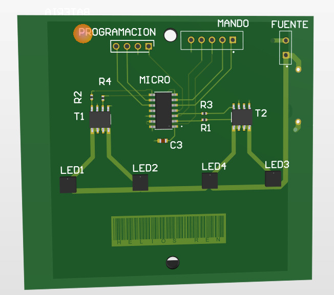
Sistema de Luces Traseras HELIOS REN
El siguiente trabajo presenta las etapas del diseño de un prototipo de sistema de luces traseras para una bicicleta. Se realiza la selección de los componentes adecuados a los requerimientos del proyecto y a los criterios del equipo de trabajo. Se realizó la simulación del funcionamiento del sistema en el software Proteus y la codificación con la ayuda de MPLAB X. Adicionalmente, se presenta el diseño PCB del circuito y las modificaciones a la propuesta de la competencia.
Requerimientos
Requerimientos generales
Diseñar un prototipo de un sistema de luces traseras para bicicletas.
Requerimientos específicos
- Autonomía de 25 horas en funcionamiento continuo.
- Uso de baterías recargables; la recarga se realiza mediante un puerto USB.
- Tres modos de operación.
- Precio final viable para el mercado (25 € < precio < 40 €).
- Utilizar componentes disponibles, asequibles y con soporte en el mercado.
Además, se propone una versión PRO del producto con los siguientes requerimientos adicionales:
- Luces de cruce para cada lado e intermitentes.
- Mando de control ajustable al manillar del ciclista para controlar el comportamiento del producto.
La Figura 1 describe los distintos modos de operación propuestos para el sistema de luces traseras. Además, plantea el uso de un único botón para realizar la transición entre modos. Las luces de cruce no se ven reflejadas en los modos de operación; dichas luces solo tienen dos estados: encendido y apagado.
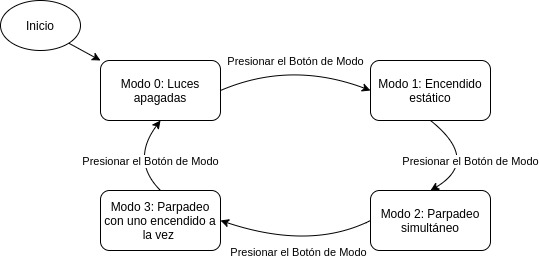
Figura 1: diagrama que muestra los modos de uso de las luces traseras.
Diseño
Hardware
En la Figura 2 se puede observar el diagrama de bloques de hardware del prototipo. Incluye los componentes esenciales del diseño: pulsadores, baterías, cargador de baterías, luces y los transistores que representan la etapa de control de potencia de cada luz LED. En la Figura 2 se llama luces de freno a las luces traseras que no se utilizan para indicar cruces.
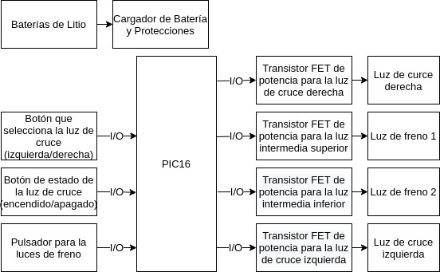
Figura 2: diagrama de bloques de hardware.
Alimentación
Para incorporar baterías de litio recargables al diseño se seleccionó un módulo basado en el integrado TP4056, que contiene un cargador de corriente y voltaje constante para baterías de ion litio de una celda (Figura 3). Las baterías de 1 celda tienen un voltaje nominal de 3,7 V, valor que se establece como el voltaje de alimentación de los circuitos lógicos en el diseño.
Para dimensionar las baterías se tomó como referencia que el dispositivo debe ser capaz de ofrecer un funcionamiento de 26 horas continuas con ambas luces principales encendidas a máxima potencia, dejando margen sobre el requerimiento de 25 horas. Cada LED presenta un consumo máximo de 180 mA, de manera que: 2 × 180 mA × 26 h = 9360 mAh. Se decidió usar un arreglo de 4 baterías de 2600 mAh en paralelo, lo que ofrece 10 400 mAh y permite cubrir la demanda de los LED descrita.
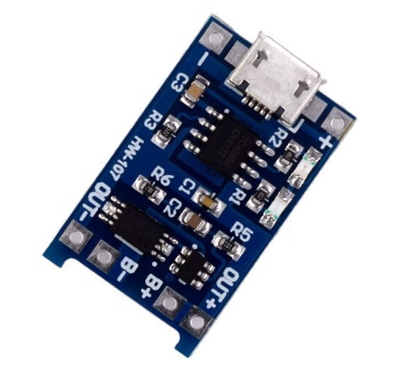
Figura 3: módulo TP4056, cargador de batería.
Microcontrolador
Los requerimientos funcionales del proyecto son:
- 4 salidas digitales para controlar 4 LED.
- Programar el dispositivo vía ICSP.
- Alimentación con 3,7 V.
- 4 entradas digitales para controlar el comportamiento de los LED.
La principal limitante para escoger un microcontrolador para esta aplicación son los puertos digitales disponibles, por lo que se buscó uno con dichas características y que fuese conservador con los recursos internos. Las familias PIC12F y PIC16F tienen una CPU de 8 bits que puede funcionar a velocidades de hasta 5 MIPS (millones de instrucciones por segundo). Las variantes de la familia PIC12F tienen 8 pines, mientras que las variantes PIC16F se ofrecen en encapsulados de 14 a 64 pines. Para el proyecto se escogió el PIC16F1454 de Microchip por ser la familia más cercana a cumplir con nuestros requerimientos funcionales.
La familia PIC16F1454/1455/1459 se basa en el núcleo de arquitectura media con 49 instrucciones y proporciona hasta 12 MIPS, 14 KB de memoria de programa y 1024 bytes de RAM. En la placa se utiliza el oscilador interno configurable, con una precisión de ±0,25 %.
Características del microcontrolador PIC16F1455:
- Velocidad de CPU máx. de 48 MHz.
- Bloque de oscilador interno de 16 MHz, con rango de frecuencia seleccionable de 16 MHz a 32 kHz.
- 12 contactos de E/S (PIC16F1454/1455).
- Programación serie en circuito (ICSP).
- Dos temporizadores de 8 bits.
Además, este dispositivo cuenta con otros periféricos como un convertidor analógico-digital (ADC) de 10 bits y 5 canales y un puerto serie síncrono maestro (MSSP) con SPI e I2C; sin embargo, no se utilizan. El pinout del dispositivo puede observarse en la Figura 4.
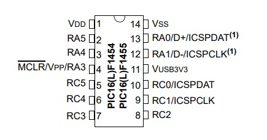
Figura 4: pinout del PIC16F1455.
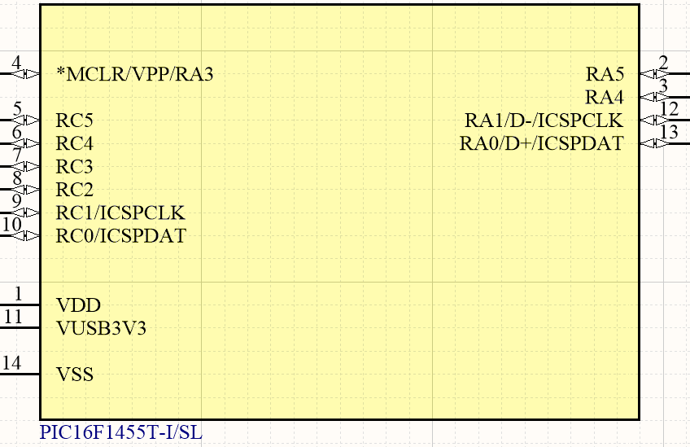
Figura 5: símbolo del PIC16F1455 en el esquemático.
Se puede programar el microcontrolador con un programador ICSP (utilizable con cualquier chip PIC). Las conexiones ICSP se muestran en el siguiente diagrama (Figura 6).
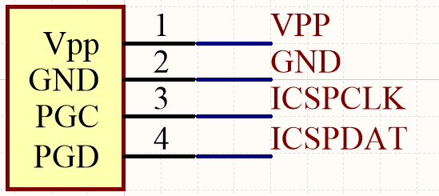
Figura 6: símbolo para la entrada ICSP en el esquemático.
Para el presente diseño no se consideró necesario el uso de un oscilador externo por dos razones:
- El microcontrolador cuenta con un oscilador interno de 16 MHz configurable y de alta precisión.
- Aunque existe la probabilidad de errores en la medición de los tiempos, esta no es una aplicación sensible a cambios en milisegundos, ya que los modos de operación de las luces se cuantifican en segundos. Cualquier cambio de comportamiento sería prácticamente imperceptible y no justifica aumentar la complejidad del diseño de hardware.
- Utilizar un dispositivo externo equivale a usar 2 GPIO más para este propósito.
Iluminación
Se utilizaron cuatro LED de 0,5 W: dos para las luces de parada y dos para las luces de cruce. Se seleccionó el LED blanco OVS5MWBCR4 de la marca TT Electronics, de 50 lm, cuyo voltaje directo (forward) está en el rango [3,0 ; 4,1] V, con una corriente nominal de 180 mA y un pico de corriente de 350 mA; de esta manera no hace falta resistencia de protección para dichos LED, ya que la alimentación es de 3,7 V. Para optimizar la distancia de visualización se utiliza una lente de enfoque de 10° de apertura para cada LED.
Para controlar los LED se necesitaron cuatro transistores. Se seleccionaron dos integrados BTS3405GXUMA1 de la marca Infineon; cada integrado tiene dos transistores cuyo voltaje drain-source máximo (VDS) es de 42 V, con una corriente máxima de drain de 350 mA cada uno (ideal para los LED escogidos) y un voltaje de activación de 1,7 V, por lo que es compatible con la lógica de 3,3 V del microcontrolador.
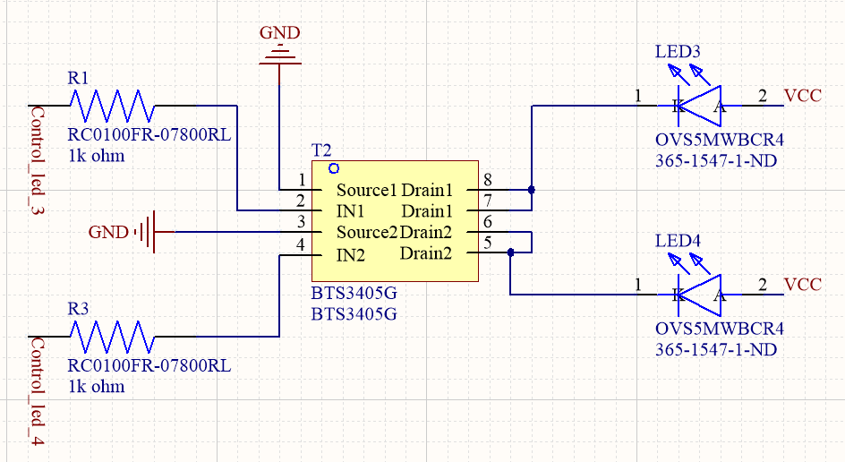
Figura 7: sistema de control para las luces LED.
Interfaz de control
El control de las luces cuenta con dos formatos. El primero usa un solo botón, capaz de realizar ciclos de encendido pasando por los distintos modos de operación hasta el apagado. Este botón está en la carcasa del dispositivo.
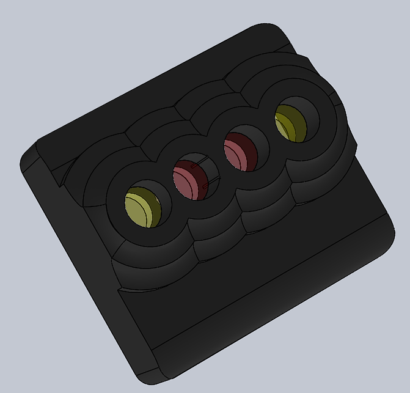
Figura 8: sistema de control para las luces LED.
El segundo formato usa un mando de control. A través de esta opción se pueden incorporar más funciones — entre ellas luces intermitentes y luces de cruce —, además de los modos de operación, que se mantienen igual. Esta versión del producto tiene un costo extra y puede observarse a continuación.
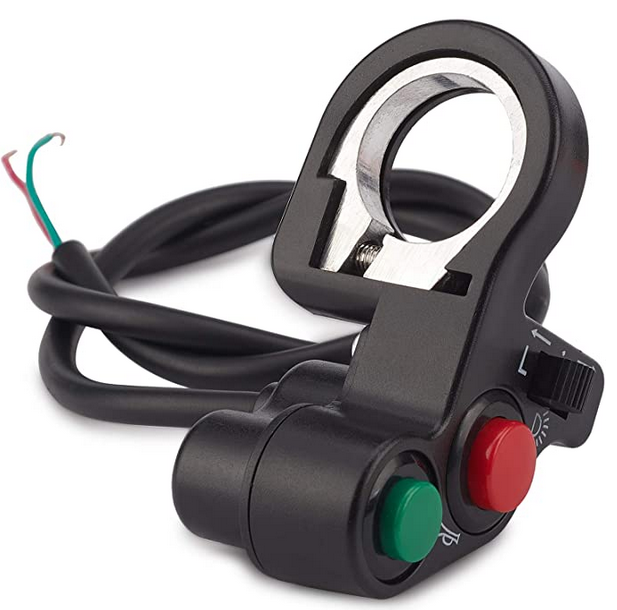
Figura 9: sistema de control externo para las luces LED.
Software
En la Figura 10 se puede observar el diagrama de bloques del software para el microcontrolador. Cada pulsador se encuentra conectado a un puerto de entrada/salida configurado como entrada. El microcontrolador debe identificar el estado en el puerto de entrada y manejar los posibles rebotes asociados.
Un deslizador selecciona la luz de cruce que se va a utilizar. Un botón coloca ambas luces de cruce en modo intermitente. Un pulsador cambia el estado de las luces traseras, que siguen los modos presentados en la Figura 1.
Dado que no se utiliza ningún periférico, la única configuración realizada al microcontrolador fue la de escoger el oscilador. Como se mencionó, se optó por el oscilador interno del dispositivo con una frecuencia de 31 kHz, la menor posible, porque no se necesita un nivel de precisión elevado y además permite un menor consumo de las baterías.
Una vez realizada la selección del hardware, se realizó el diagrama de bloques de software que se muestra en la Figura 10. Dicho diagrama muestra los periféricos utilizados y los elementos indispensables del software: la lectura de los puertos, el manejo de rebotes cuando es necesario y un controlador que establece las señales para las luces y maneja los puertos de salida conectados a los transistores de potencia. También se realizó un diagrama jerárquico de software (Figura 11), que muestra cómo se relacionan los elementos antes mencionados. Finalmente se realizó el diagrama de capas de software (Figura 12), que se enfoca en establecer qué elementos podrían tener mayor complejidad; los bloques considerados de mayor complejidad son los controladores, porque deben manejar los estados de cada luz, y el diagrama también muestra el amplio uso de los puertos de entrada y salida en el proyecto.
En las Figuras 10, 11 y 12 se llama luces de freno a las luces traseras que no se utilizan para indicar cruces.
Implementación
A nivel de código, luego de inicializar el sistema y las variables necesarias, el programa fluye de la siguiente manera:
- Se realiza la lectura de todas las entradas, es decir, si se ha presionado o no alguno de los botones.
- Se verifica si se ha presionado el botón para encender las luces intermitentes, que tiene prioridad sobre cualquier luz de cruce. En caso afirmativo, se realiza dicha acción.
- Si no se presionó el botón de las intermitentes, se verifica si se presionó el que enciende la luz de cruce derecha. En caso afirmativo, se realiza dicha acción.
- Si no se presionó el botón de las intermitentes ni el de la luz de cruce derecha, se verifica si se presionó el que enciende la luz de cruce izquierda. En caso afirmativo, se realiza dicha acción.
- Si no se presionó ninguno de estos tres botones, las luces de cruce quedan apagadas.
- Se verifica si se ha presionado el botón para cambiar el modo de operación de las luces de parada. El modo inicia por defecto en 0 y cambia cuando se detecta un flanco de bajada, es decir, al dejar de presionar el botón. Los modos de operación son:
- Modo 0: las luces de parada se mantienen apagadas.
- Modo 1: las luces de parada se mantienen encendidas de manera fija.
- Modo 2: las luces de parada se encienden de manera intermitente.
- Modo 3: las luces de parada se mantienen intermitentes con los ciclos de encendido y apagado invertidos, es decir, solo se enciende un LED a la vez.
- Se aplica el modo de control seleccionado, que es manejado por una máquina de estados (Figura 1).
- Se actualizan todas las variables de control.
Cabe destacar que los ciclos de encendido y apagado de las luces, cuando son necesarios, se temporizan mediante contadores de ciclo. Para determinar el número de ciclos correcto, de modo que las luces cambiaran de estado en un tiempo prudencial, se realizó un proceso iterativo probando distintos valores.
Adicionalmente, se cuenta con un control de rebote por software para el botón de selección de modos.
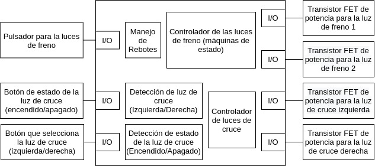
Figura 10: diagrama de bloques de software.
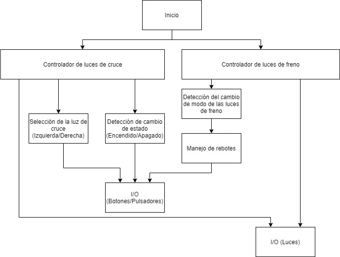
Figura 11: diagrama jerárquico de software.
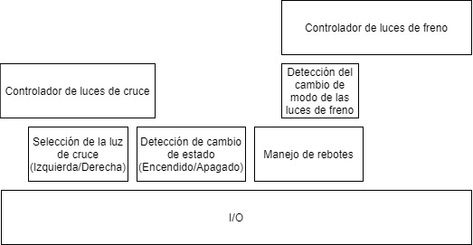
Figura 12: diagrama de capas de software.
Resultados
Se realizó la simulación del circuito propuesto en Proteus; en la Figura 13 se aprecia el diseño realizado. Los interruptores del mando se modelaron como switches, mientras que para el control de los distintos modos se incorporó un botón. El sistema de alimentación no se ilustra en la simulación; únicamente se incorporan fuentes del voltaje correspondiente. Los integrados seleccionados como transistores (BTS3405GXUMA1) no se pueden simular en Proteus, por lo que se representaron mediante sus equivalentes MOSFET. Se lograron simular exitosamente los distintos modos de operación; en el vídeo entregado se muestra su funcionamiento.
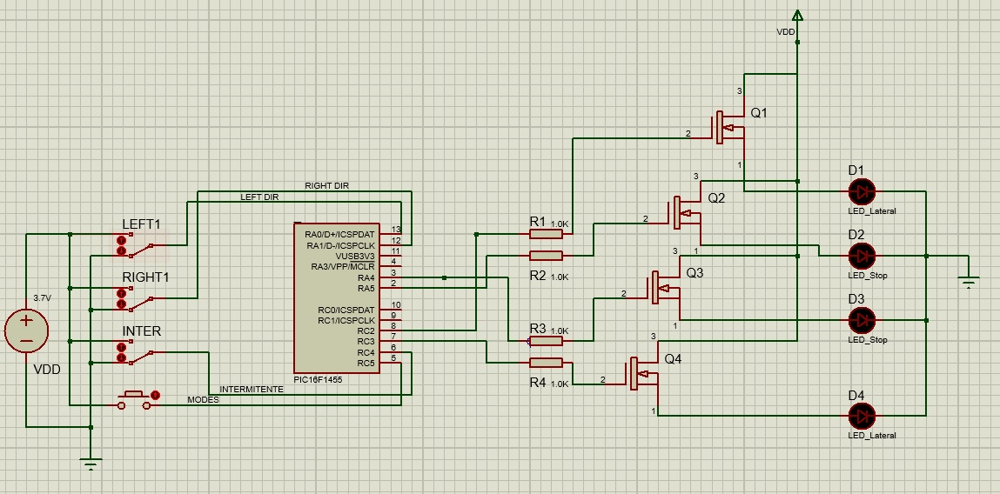
Figura 13: modelo del circuito en Proteus.
Se puede concluir que los precios finales de venta se encuentran dentro de los márgenes de los requerimientos y, dependiendo de la configuración y el tamaño de la compra, se obtienen más beneficios con nuestra solución a un precio competitivo.
Como paso extra para desarrollar el proyecto, se hizo el diseño del PCB del sistema completo. Se realizó con el software Altium Designer y los resultados pueden observarse a continuación.
Figura 14: PCB del sistema, vista 1.
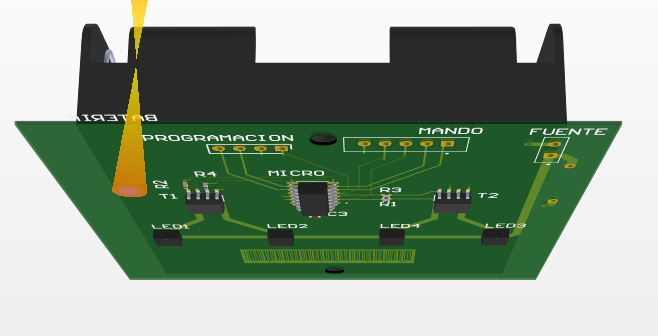
Figura 15: PCB del sistema, vista 2.
Finalmente, para culminar un prototipo de diseño mecánico, se diseñó una carcasa con el software de modelado 3D AutoCAD. Los resultados finales pueden observarse a continuación.
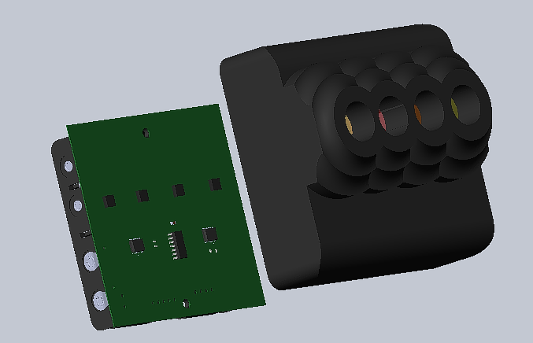
Figura 16: carcasa del PCB.